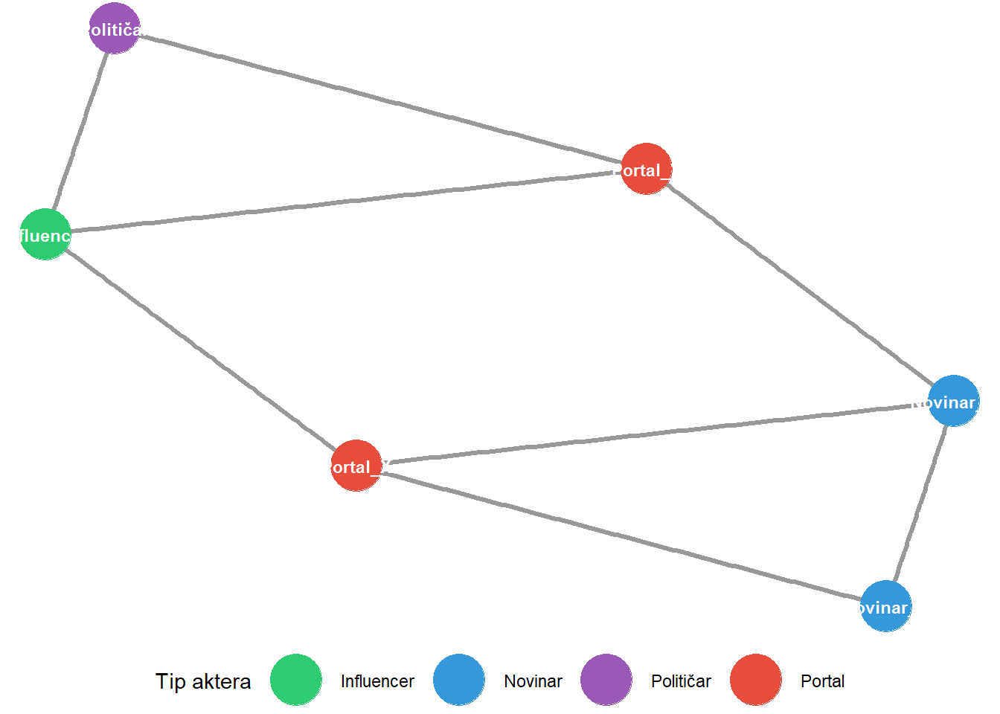
Analiza društvenih mreža u istraživanju masovne komunikacije
1 Uvod: Relacijska perspektiva
Zamislimo da želimo razumjeti tko je najutjecajnija osoba na hrvatskom Twitteru. Je li to korisnik s najviše pratitelja ili možda osoba čije objave redovito dijele novinari vodećih medijskih kuća? Ova naizgled jednostavna pitanja otkrivaju fundamentalnu promjenu u načinu na koji suvremena društvena znanost pristupa istraživanju masovne komunikacije. Umjesto da analiziramo isključivo individualne karakteristike aktera, poput broja objava ili demografskih obilježja, fokus se premješta na proučavanje odnosa i veza među njima. Upravo taj pomak perspektive čini temelj analize društvenih mreža kao metodološkog pristupa.
Ovaj pristup proizlazi iz spoznaje da društveni fenomeni nisu puki agregat individualnih atributa, već emergentna svojstva koja nastaju kroz interakciju. U kontekstu masovne komunikacije, to znači da razumijevanje širenja informacija, formiranja javnog mnijenja ili dinamike medijskog utjecaja zahtijeva mapiranje obrazaca povezanosti među akterima. Analiza društvenih mreža pruža teorijski okvir i metodološke alate za takvo istraživanje, omogućujući nam da vizualiziramo, kvantificiramo i interpretiramo strukturu komunikacijskih tokova.
1.1 Promjena paradigme: od atributa prema relacijama
Tradicionalni pristupi u društvenim znanostima počivali su na pretpostavci da se ponašanje pojedinaca može objasniti proučavanjem njihovih atributa. U istraživanjima masovne komunikacije to se očitovalo kroz ankete koje su mjerile demografske varijable, stavove ili navike konzumacije medija. Takav pristup tretira pojedince kao izolirane jedinice čije karakteristike određuju njihovo ponašanje neovisno o društvenom kontekstu. Međutim, ova perspektiva zanemaruje činjenicu da su ljudi ukorijenjeni u mrežama odnosa koje oblikuju njihove stavove, ponašanja i mogućnosti djelovanja.
Relacijska perspektiva predstavlja fundamentalni zaokret u znanstvenom mišljenju. Umjesto pitanja tko je netko, postavlja se pitanje s kim je povezan i na koji način. U kontekstu istraživanja medija, novinara ne definiraju samo njegove profesionalne kvalifikacije, već i mreža izvora, kolega i publike s kojima je povezan. Slično tome, viralnost sadržaja na društvenim mrežama ne ovisi isključivo o kvaliteti sadržaja, već o strukturnim pozicijama korisnika koji ga dijele. Upravo ta strukturna ukorijenjenost aktera čini središnji predmet analize društvenih mreža.
Razliku između atributnog i relacijskog pristupa možemo ilustrirati jednostavnim primjerom iz prakse. Pretpostavimo da želimo identificirati ključne aktere u širenju dezinformacija na određenoj platformi. Atributni pristup fokusirao bi se na karakteristike pojedinih korisnika, poput učestalosti objavljivanja ili duljine članstva na platformi. S druge strane, relacijski pristup mapirao bi obrasce dijeljenja sadržaja među korisnicima, identificirajući čvorišta kroz koja informacije protječu i mostove koji povezuju različite zajednice. Ovaj drugi pristup omogućuje razumijevanje sistemske dinamike širenja informacija, otkrivajući strukturne ranjivosti informacijskog ekosustava.
1.2 Temeljni koncepti: čvorovi i veze
Svaka mreža sastoji se od dva temeljna elementa. Prvi element jesu čvorovi koji predstavljaju entitete od interesa u istraživanju. U teoriji grafova koristi se i termin vrhovi, dok u sociološkoj tradiciji govorimo o akterima. U kontekstu istraživanja masovne komunikacije, čvorovi mogu predstavljati novinare, medijske kuće, političare, influencere ili obične korisnike društvenih mreža. Izbor entiteta koje ćemo modelirati kao čvorove ovisi o istraživačkom pitanju i teorijskom okviru studije.
Drugi temeljni element mreže jesu veze koje povezuju čvorove. U literaturi se koriste i termini bridovi ili relacije. Veze predstavljaju odnose među akterima i mogu poprimiti različite oblike ovisno o fenomenu koji proučavamo. Primjerice, veza može predstavljati dijeljenje objave na društvenoj mreži, citiranje izvora u novinarskom članku, hiperlinkove između web stranica ili vlasničke strukture među medijskim kućama. Priroda veze određuje interpretaciju mrežne strukture, stoga je precizna definicija relacije od presudne važnosti za valjanost istraživanja.
Formalno, mrežu možemo definirati kao uređeni par G = (V, E), gdje V predstavlja skup čvorova, a E skup veza među njima. Svaka veza e iz skupa E definirana je kao par čvorova (v₁, v₂) koje povezuje. Ova matematička formalizacija omogućuje precizno opisivanje strukture mreže i primjenu algoritama za njezinu analizu. Nadalje, čvorovi i veze mogu imati pridružene atribute koji obogaćuju analizu. Primjerice, čvorovima mogu biti pridruženi podaci o geografskoj lokaciji ili broju pratitelja, dok veze mogu nositi informaciju o vremenu nastanka ili učestalosti interakcije.
U istraživanjima masovne komunikacije, akter može biti bilo koji entitet koji sudjeluje u komunikacijskom procesu. Medijska kuća poput HRT-a, portal Index.hr, novinar s imenom i prezimenom, ali i anonimni korisnik Twittera koji dijeli vijesti, svi oni mogu biti modelirani kao čvorovi u komunikacijskoj mreži. Ključno je razumjeti da mreža nije objektivna stvarnost, već analitička konstrukcija koju istraživač gradi prema svojim teorijskim pretpostavkama i istraživačkim ciljevima.
1.3 Povijesni razvoj: od sociometrije do mrežne znanosti
Korijeni analize društvenih mreža sežu u tridesete godine dvadesetog stoljeća i rad rumunjsko-američkog psihijatra Jacoba Levy Morena. Moreno je razvio sociometriju kao metodu za proučavanje interpersonalnih odnosa unutar grupa. Njegova ključna inovacija bila je sociogram, grafički prikaz društvenih odnosa u kojem su pojedinci predstavljeni točkama, a njihovi odnosi linijama koje ih povezuju. U svojoj knjizi objavljenoj 1934. godine, Moreno je primijenio sociometrijske metode za analizu društvene strukture u institucijama poput škola i zatvora. Time je postavio temelje za sustavno empirijsko proučavanje mrežnih obrazaca.
Morenov pristup donio je revolucionarnu spoznaju da prije bilo kakvog društvenog programa istraživač mora uzeti u obzir stvarnu konstituciju grupe. Sociometrija je omogućila otkrivanje skrivenih struktura koje oblikuju grupu, uključujući saveze, podgrupe, neizrečena uvjerenja i zabranjene agende. Moreno je identificirao konfiguraciju koju je nazvao sociometrijskom zvijezdom, odnosno pojedinca kojeg mnogi drugi biraju kao prijatelja. Ti rani uvidi anticipirali su suvremene koncepte poput čvorišta i utjecajnih korisnika u digitalnim mrežama.
Sljedeći prijelomni trenutak u razvoju mrežnog pristupa predstavlja eksperiment Stanleyja Milgrama iz 1967. godine, poznat kao eksperiment malog svijeta. Milgram je postavio jednostavno pitanje koje je intrigiralo matematičare desetljećima: koliko posrednika treba da poveže dva nasumično odabrana čovjeka u Sjedinjenim Američkim Državama? Koristeći metodu lančanih pisama, Milgram je otkrio da je prosječna udaljenost između ispitanika iz Nebraske i ciljne osobe u Bostonu iznosila samo pet do šest koraka. Ovaj nalaz populariziran je pod nazivom šest stupnjeva odvojenosti, iako sam Milgram taj termin nikada nije upotrijebio.
Milgramov eksperiment imao je duboke implikacije za razumijevanje društvene strukture. Otkrio je da bez obzira na ogromnu veličinu populacije, ljudsko društvo karakteriziraju iznenađujuće kratki lanci poznanstava. Nadalje, eksperiment je pokazao da se polovica svih pisama koja su stigla do cilja prošla kroz samo tri osobe, sugerirajući postojanje ključnih posrednika u društvenoj mreži. Ovi posrednici, koje suvremena mrežna znanost naziva mostovima ili povezivačima, igraju neproporcionalnu ulogu u širenju informacija kroz društvo.
Suvremena era mrežne znanosti započinje krajem devedesetih godina dvadesetog stoljeća radom Alberta-Lászla Barabásija i njegove suradnice Réke Albert. Analizirajući topologiju dijela World Wide Weba, Barabási je otkrio da distribucija povezanosti stranica ne slijedi normalnu raspodjelu koja bi se očekivala u nasumičnim mrežama. Umjesto toga, distribucija je slijedila zakon potencije, što znači da mali broj stranica ima ogroman broj dolaznih veza dok velika većina stranica ima vrlo malo veza.
Ovu strukturu Barabási je nazvao mrežom bez skale, a objasnio ju je mehanizmom preferencijskog prikapčanja. Prema ovom mehanizmu, novi čvorovi koji ulaze u mrežu imaju veću vjerojatnost povezivanja s već dobro povezanim čvorovima. Intuitivno, ovo možemo razumjeti kao fenomen bogatiji postaju bogatiji. Nova web stranica vjerojatnije će postaviti hiperveze prema Googleu nego prema nepoznatom blogu, baš kao što novi korisnik Twittera vjerojatnije slijedi poznatu javnu osobu nego anonimnog korisnika.
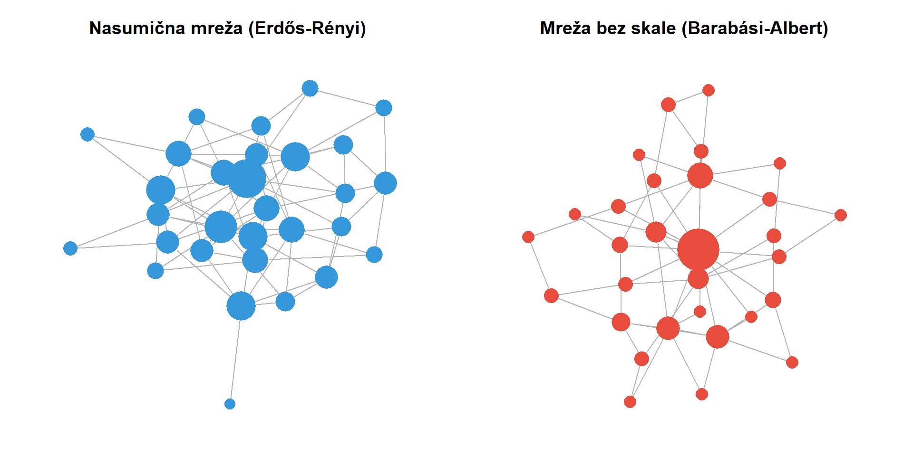
Barabásijevo otkriće imalo je dalekosežne implikacije za razumijevanje komunikacijskih sustava. Mreže bez skale karakterizira postojanje čvorišta ili hubova, odnosno čvorova s disproporcionalno velikim brojem veza. U kontekstu masovne komunikacije, čvorišta mogu biti mainstream mediji čije sadržaje preuzimaju deseci manjih portala, ili influenceri čije objave dijele tisuće pratitelja. Razumijevanje uloge čvorišta ključno je za analizu procesa poput širenja vijesti, formiranja javnog mnijenja ili dinamike dezinformacijskih kampanja.
2 Osnovni elementi i vrste mreža
Razumijevanje različitih tipova mrežnih struktura preduvjet je za odabir odgovarajućih analitičkih metoda i ispravnu interpretaciju rezultata. Mreže se mogu klasificirati prema nekoliko ključnih dimenzija koje odražavaju prirodu odnosa koji se proučavaju. U ovom poglavlju razmatramo tri temeljne karakteristike mrežnih podataka: usmjerenost veza, njihovu težinu te načine formalnog prikaza mrežne strukture.
2.1 Usmjerenost veza
Jedna od temeljnih distinkcija u mrežnoj analizi jest razlika između usmjerenih i neusmjerenih mreža. U neusmjerenoj mreži veze nemaju smjer, što znači da ako postoji veza između čvora A i čvora B, ona je simetrična. Primjer neusmjerene mreže bio bi sustav komunikacije u kojem mjerimo jesu li dvije osobe međusobni prijatelji na Facebooku. U tom slučaju, prijateljstvo je po definiciji obostrano jer obje strane moraju prihvatiti zahtjev za prijateljstvom.
S druge strane, usmjerene mreže karakterizira asimetričnost odnosa. Veza ima definiran smjer koji ide od izvornog čvora prema ciljnom čvoru. Klasičan primjer usmjerene mreže jest praćenje na Twitteru ili Instagramu, gdje korisnik A može pratiti korisnika B bez da korisnik B uzvraća praćenje. U kontekstu istraživanja medija, usmjerene mreže često modeliraju tokove informacija. Primjerice, mreža citiranja članaka usmjerena je jer članak A može citirati članak B, a da pritom članak B ne citira članak A.
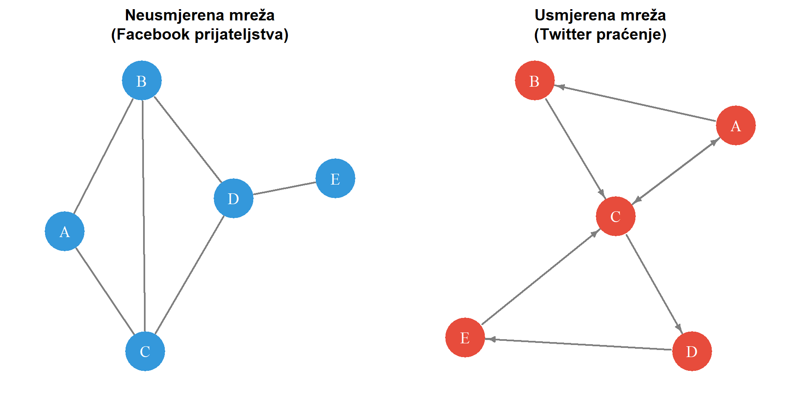
Razlikovanje usmjerenih i neusmjerenih mreža ima značajne analitičke implikacije. U usmjerenim mrežama razlikujemo ulazni stupanj koji mjeri broj veza koje dolaze u čvor, te izlazni stupanj koji mjeri broj veza koje izlaze iz čvora. U kontekstu Twittera, ulazni stupanj odgovara broju pratitelja, dok izlazni stupanj odgovara broju računa koje korisnik prati. Ova distinkcija omogućuje identificiranje različitih tipova aktera. Korisnik s visokim ulaznim stupnjem i niskim izlaznim stupnjem mogao bi biti influencer kojeg mnogi prate, ali on prati malo drugih. Obratno, korisnik s visokim izlaznim stupnjem i niskim ulaznim stupnjem mogao bi biti netko tko aktivno prati novosti, ali sam nije popularan.
U istraživanjima masovne komunikacije, izbor između usmjerene i neusmjerene mreže ovisi o prirodi fenomena koji se proučava. Ako nas zanima tko utječe na koga, usmjerena mreža će pružiti bogatije informacije. Međutim, ako proučavamo suradnju ili zajedničku pripadnost grupama, neusmjerena mreža može biti primjereniji izbor. Primjerice, mreža koautorstva znanstvenih radova tipično se modelira kao neusmjerena jer koautorstvo podrazumijeva obostrani odnos.
2.2 Težina veze
Druga važna dimenzija mrežne strukture jest razlika između binarnih i ponderiranih mreža. U binarnoj mreži veza između dva čvora može samo postojati ili ne postojati. Formalno, težina svake veze iznosi ili jedan ili nula. Ovakav prikaz pojednostavljuje strukturu mreže, ali gubi informaciju o intenzitetu odnosa. Primjerice, binarna mreža dijeljenja sadržaja bilježi samo činjenicu da je korisnik A podijelio objavu korisnika B, ne uzimajući u obzir koliko je puta to učinio.
Nasuprot tome, ponderirane mreže svakoj vezi pridružuju numeričku vrijednost koja odražava snagu ili intenzitet odnosa. Ova težina može predstavljati učestalost interakcije, trajanje veze, količinu razmijenjenih resursa ili neku drugu mjeru jačine odnosa. U istraživanjima komunikacije, težina veze mogla bi predstavljati broj zajedničkih članaka koje su dva novinara napisala, učestalost međusobnih retvitova ili količinu prometa između dvije web stranice.
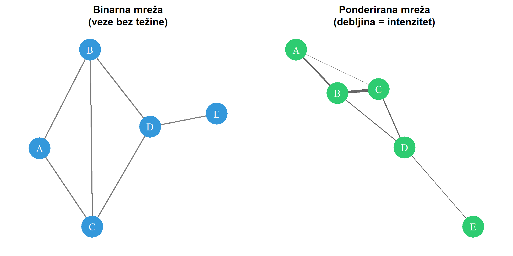
Prednost ponderiranih mreža leži u njihovoj informativnosti. Veza između dva čvora koja se ostvaruje jednom tjedno kvalitativno je različita od veze koja se ostvaruje svakodnevno, premda obje postoje u binarnom smislu. Ponderirana mreža hvata tu razliku i omogućuje sofisticiranije analize. S druge strane, prikupljanje podataka o težini veza može biti zahtjevnije, a određene analitičke metode razvijene su primarno za binarne mreže. Istraživač mora pažljivo odvagnuti prednosti i nedostatke svakog pristupa s obzirom na istraživačka pitanja i dostupne podatke.
U praksi se ponekad ponderirane mreže pretvaraju u binarne primjenom praga. Definiramo vrijednost ispod koje smatramo da veza ne postoji. Primjerice, možemo odlučiti da veza među korisnicima postoji samo ako su razmijenili najmanje pet poruka. Ovaj postupak binarizacije pojednostavljuje analizu, ali izbor praga utječe na rezultate i mora biti teorijski opravdan.
2.3 Matrični prikaz mreže
Za analitičke svrhe, mrežne strukture mogu se prikazati u različitim formatima podataka. Najčešći i najsvestraniji format jest matrica susjedstva, poznata i kao adjacencijska matrica. Ova kvadratna matrica dimenzija n × n, gdje n predstavlja broj čvorova u mreži, bilježi postojanje i eventualnu težinu veza među svim parovima čvorova.
U matrici susjedstva retci i stupci označeni su imenima ili identifikatorima čvorova. Vrijednost u ćeliji na presjeku retka i i stupca j označava vezu od čvora i prema čvoru j. U binarnoj mreži, vrijednost jedan označava postojanje veze, dok vrijednost nula označava njezinu odsutnost. U ponderiranoj mreži, vrijednost u ćeliji odgovara težini veze. Dijagonala matrice predstavlja potencijalne samopoveznice, odnosno veze čvora sa samim sobom, koje se u mnogim primjenama postavljaju na nulu.
| Medij | HRT | N1 | Index | Jutarnji |
|---|---|---|---|---|
| HRT | 0 | 3 | 1 | 2 |
| N1 | 2 | 0 | 4 | 1 |
| Index | 0 | 2 | 0 | 5 |
| Jutarnji | 1 | 0 | 3 | 0 |
Iz gornje tablice možemo iščitati obrasce citiranja među medijima. Primjerice, vrijednost 3 u ćeliji HRT-N1 označava da je HRT citirao N1 tri puta. Uočavamo da matrica nije simetrična jer je riječ o usmjerenoj mreži. Index je citirao Jutarnji pet puta, dok je Jutarnji citirao Index tri puta. Ova asimetrija pruža uvid u tokove informacija i potencijalnu hijerarhiju izvora među medijima.
Za neusmjerene mreže, matrica susjedstva je simetrična, što znači da je vrijednost u ćeliji (i, j) jednaka vrijednosti u ćeliji (j, i). Ova simetrija proizlazi iz činjenice da u neusmjerenoj mreži veza između A i B podrazumijeva i vezu između B i A. Nasuprot tome, u usmjerenim mrežama poput one prikazane u tablici, matrica općenito nije simetrična jer veza od A prema B ne implicira vezu od B prema A.
Osim matrice susjedstva, mrežni podaci mogu se prikazati i u obliku liste bridova. Ovaj format jednostavno nabraja sve postojeće veze u mreži, navodeći za svaku vezu izvorni i ciljni čvor te eventualnu težinu. Lista bridova prostorno je učinkovitija od matrice susjedstva za rijetke mreže u kojima većina potencijalnih veza ne postoji. Primjerice, u velikoj mreži s milijun čvorova, matrica susjedstva imala bi bilijun ćelija od kojih bi većina sadržavala nule. Lista bridova bilježila bi samo postojeće veze, značajno smanjujući memorijske zahtjeve.
| Format | Struktura | Prednosti | Nedostaci |
|---|---|---|---|
| Matrica susjedstva | Kvadratna matrica n × n | Omogućuje matrične operacije, intuitivna | Neučinkovita za rijetke mreže |
| Lista bridova | Parovi čvorova s težinama | Memorijski učinkovita, jednostavna | Manje pogodna za neke algoritme |
| Lista susjedstva | Za svaki čvor popis susjeda | Brz pristup susjedima | Složenija struktura podataka |
Razumijevanje ovih temeljnih koncepata i formata podataka preduvjet je za daljnje proučavanje mrežnih metrika i analitičkih postupaka. U sljedećim poglavljima razmatramo mjere centralnosti koje omogućuju identificiranje ključnih aktera u mreži, strukturne karakteristike poput gustoće i klasteriranja koje opisuju mrežu na agregatnoj razini, te metode za detekciju zajednica i analizu difuzijskih procesa.
3 Mjere centralnosti
Zamislimo istraživača koji proučava mrežu dijeljenja političkih vijesti na hrvatskom Twitteru tijekom izborne kampanje. Pred sobom ima mrežu s tisućama korisnika i desecima tisuća veza koje predstavljaju retvitove. Središnje pitanje koje si postavlja jest: tko su najvažniji akteri u ovoj mreži? Intuitivno, važnost se čini jednostavnim konceptom, no dubljom analizom postaje jasno da postoje različiti načini na koje čvor može biti važan. Korisnik s najviše pratitelja važan je po jednom kriteriju, korisnik čije objave povezuju ideološki različite skupine važan je po drugom, a korisnik čije objave najbrže dosežu cijelu mrežu važan je po trećem. Mjere centralnosti formaliziraju ove različite intuicije o važnosti, pružajući kvantitativne alate za identificiranje ključnih aktera u mrežnim strukturama.
Centralnost u analizi mreža odnosi se na skup metrika koje kvantificiraju relativnu važnost ili istaknutost čvorova unutar mrežne strukture. Različite mjere centralnosti operacionaliziraju različite koncepte važnosti, a izbor odgovarajuće mjere ovisi o teorijskom pitanju koje istraživač postavlja i o karakteristikama fenomena koji proučava. U kontekstu istraživanja masovne komunikacije, mjere centralnosti omogućuju identificiranje utjecajnih medija, ključnih novinara, gatekeepera informacija i mostova između različitih zajednica. Svaka mjera centralnosti odgovara na specifično pitanje o ulozi čvora u mreži, stoga je razumijevanje logike različitih mjera preduvjet za njihovu ispravnu primjenu i interpretaciju.
3.1 Stupanj centralnosti
Najjednostavnija i najintuitivnija mjera centralnosti jest stupanj centralnosti (engl. degree centrality) koja mjeri broj izravnih veza koje čvor ima s drugim čvorovima u mreži. Logika ove mjere proizlazi iz pretpostavke da čvorovi s više veza imaju više mogućnosti za interakciju, utjecaj i pristup resursima koji cirkuliraju mrežom. U kontekstu društvenih mreža, osoba s više prijatelja ili poznanika ima veći socijalni kapital, više izvora informacija i potencijalno veći utjecaj na svoje okruženje.
Formalno, stupanj centralnosti čvora \(i\) u neusmjerenoj mreži definira se jednostavno kao broj bridova incidentnih na taj čvor:
\[C_D(i) = k_i = \sum_{j} a_{ij}\]
U ovoj formuli \(k_i\) označava stupanj čvora \(i\), a \(a_{ij}\) je element matrice susjedstva koji poprima vrijednost 1 ako postoji veza između čvorova \(i\) i \(j\), odnosno 0 ako veza ne postoji. Za usporedbu mreža različitih veličina koristi se normalizirani stupanj centralnosti koji se dobiva dijeljenjem stupnja s maksimalnim mogućim brojem veza:
\[C_D^{norm}(i) = \frac{k_i}{n-1}\]
gdje je \(n\) ukupan broj čvorova u mreži. Normalizirani stupanj poprima vrijednosti između 0 i 1, što omogućuje usporedbu centralnosti čvorova u mrežama različitih veličina.
U usmjerenim mrežama razlikujemo dva tipa stupnja centralnosti. Ulazni stupanj (engl. in-degree) broji veze koje dolaze u čvor, dok izlazni stupanj (engl. out-degree) broji veze koje izlaze iz čvora. Ova distinkcija ima značajne implikacije za interpretaciju. U mreži citiranja akademskih radova, visok ulazni stupanj označava rad koji mnogi citiraju, što sugerira njegov utjecaj na polje. Visok izlazni stupanj označava rad s mnogim referencama, što može indicirati pregledni članak ili sintezu literature. U kontekstu Twittera, ulazni stupanj odgovara broju pratitelja, a izlazni stupanj broju praćenih računa.
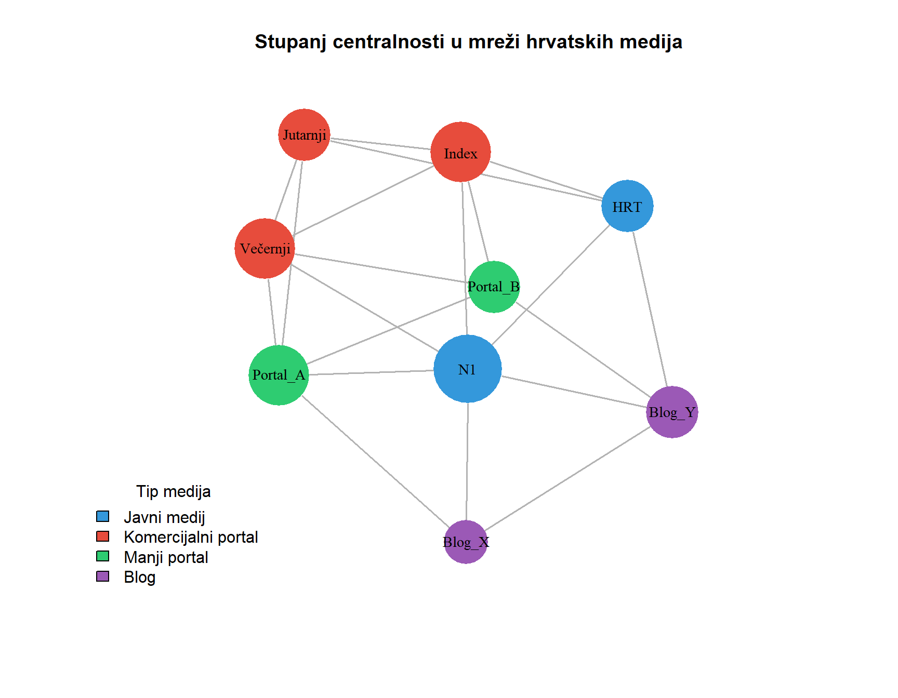
| Medij | Tip | Stupanj | Normalizirani stupanj |
|---|---|---|---|
| N1 | Javni medij | 6 | 0.750 |
| Index | Komercijalni portal | 5 | 0.625 |
| Večernji | Komercijalni portal | 5 | 0.625 |
| Portal_A | Manji portal | 5 | 0.625 |
| HRT | Javni medij | 4 | 0.500 |
| Jutarnji | Komercijalni portal | 4 | 0.500 |
| Portal_B | Manji portal | 4 | 0.500 |
| Blog_Y | Blog | 4 | 0.500 |
| Blog_X | Blog | 3 | 0.375 |
U kontekstu istraživanja masovne komunikacije, stupanj centralnosti može se interpretirati kao mjera vidljivosti ili popularnosti. Medij s visokim stupnjem centralnosti u mreži citiranja jest medij kojeg mnogi drugi mediji citiraju kao izvor, što sugerira njegov status autoritativnog izvora informacija. Na društvenim mrežama, korisnik s visokim stupnjem centralnosti jest korisnik s mnogo pratitelja ili prijatelja, što mu daje potencijalnu publiku za širenje poruka. Međutim, važno je napomenuti da stupanj centralnosti mjeri samo lokalne veze i ne uzima u obzir globalnu strukturu mreže. Čvor može imati visok stupanj, ali biti povezan samo s marginaliziranim dijelom mreže, što ograničava njegov stvarni utjecaj.
3.2 Međuposredovanje
Dok stupanj centralnosti mjeri izravne veze čvora, međuposredovanje (engl. betweenness centrality) hvata različit aspekt važnosti koji se odnosi na poziciju čvora na putanjama koje povezuju druge čvorove u mreži. Intuitivno, čvor ima visoko međuposredovanje ako se nalazi na mnogim najkraćim putanjama između drugih parova čvorova. Takav čvor djeluje kao most ili posrednik kroz kojeg moraju prolaziti informacije, resursi ili utjecaji koji se kreću mrežom. U kontekstu komunikacije, čvorovi s visokim međuposredovanjem mogu se konceptualizirati kao gatekeeperi koji kontroliraju tokove informacija.
Formalno, međuposredovanje čvora \(i\) definira se kao:
\[C_B(i) = \sum_{s \neq i \neq t} \frac{\sigma_{st}(i)}{\sigma_{st}}\]
U ovoj formuli \(\sigma_{st}\) označava ukupan broj najkraćih putanja između čvorova \(s\) i \(t\), dok \(\sigma_{st}(i)\) označava broj tih putanja koje prolaze kroz čvor \(i\). Mjera sumira preko svih parova čvorova u mreži, kvantificirajući koliko često čvor \(i\) leži na najkraćim putanjama. Normalizirana verzija dijeli se s maksimalnim mogućim brojem parova, omogućujući usporedbu među mrežama različitih veličina.
Konceptualna snaga međuposredovanja leži u njegovoj sposobnosti identificiranja čvorova koji povezuju inače odvojene dijelove mreže. U sociološkoj literaturi, takvi čvorovi opisuju se kao zauzimatelji strukturnih rupa, pojam koji je uveo Ronald Burt. Strukturna rupa jest praznina u mreži gdje određeni čvor premošćuje dva klastera koji inače ne bi bili povezani. Akter koji premošćuje strukturnu ruku ima pristup raznolikim izvorima informacija i može djelovati kao posrednik između različitih skupina, što mu daje značajnu moć i pristup neredundantnim informacijama.
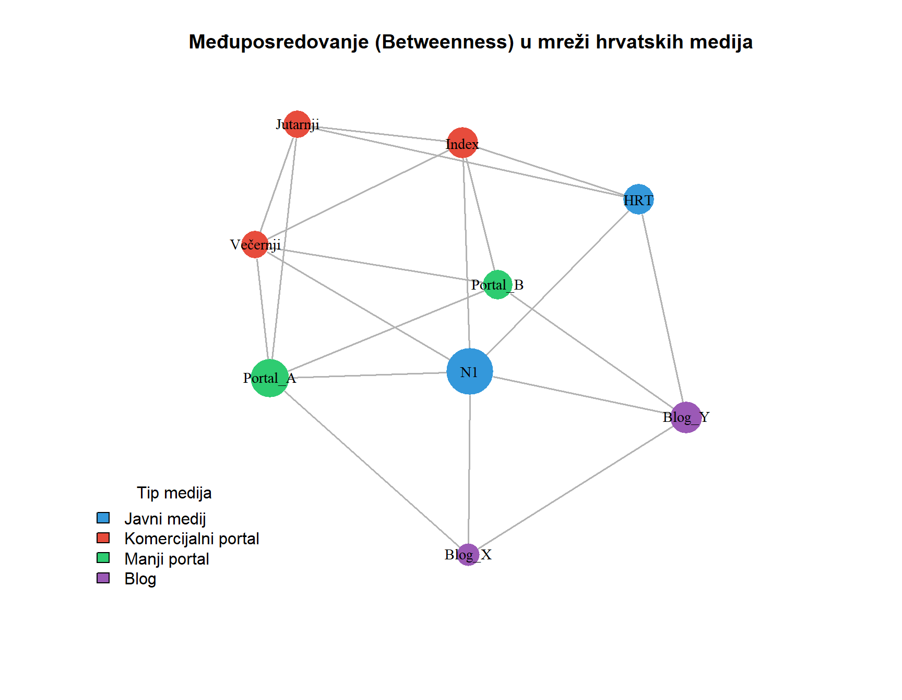
| Medij | Tip | Međuposredovanje | Normalizirano |
|---|---|---|---|
| N1 | Javni medij | 4.25 | 0.152 |
| Portal_A | Manji portal | 2.83 | 0.101 |
| Blog_Y | Blog | 1.75 | 0.062 |
| Index | Komercijalni portal | 1.67 | 0.060 |
| HRT | Javni medij | 1.58 | 0.057 |
| Portal_B | Manji portal | 1.42 | 0.051 |
| Jutarnji | Komercijalni portal | 1.08 | 0.039 |
| Večernji | Komercijalni portal | 1.08 | 0.039 |
| Blog_X | Blog | 0.33 | 0.012 |
U istraživanjima masovne komunikacije, međuposredovanje je posebno relevantno za identificiranje gatekeepera, odnosno aktera koji kontroliraju pristup informacijama između različitih skupina. Novinar koji povezuje političke elite s javnošću, agregator vijesti koji povezuje mainstream medije s alternativnim portalima, ili influencer koji premošćuje ideološki različite online zajednice, svi oni imaju potencijalno visoko međuposredovanje. Ovi akteri mogu imati disproporcionalan utjecaj na to koje informacije cirkuliraju mrežom i kako se oblikuje javni diskurs.
Praktična ilustracija dolazi iz istraživanja širenja dezinformacija. Čak i ako dezinformacijski portal ima relativno malo pratitelja (nizak stupanj), može imati visoko međuposredovanje ako ga retweetaju korisnici koji povezuju mainstream i alternativne medijske prostore. Identificiranje takvih mostova može biti ključno za razumijevanje mehanizama širenja dezinformacija i potencijalne intervencije.
3.3 Bliskost
Treća klasična mjera centralnosti jest bliskost (engl. closeness centrality) koja mjeri koliko je čvor blizu svim ostalim čvorovima u mreži u terminima prosječne udaljenosti. Intuitivno, čvor s visokom bliskošću može brzo doći do svakog drugog čvora u mreži, odnosno informacija koja kreće od tog čvora prosječno treba manje koraka da dosegne bilo koji drugi čvor. U kontekstu komunikacije, visoka bliskost može se interpretirati kao komunikacijska učinkovitost jer omogućuje brzo širenje poruka kroz mrežu.
Formalno, bliskost čvora \(i\) definira se kao recipročna vrijednost prosječne udaljenosti od tog čvora do svih ostalih čvorova:
\[C_C(i) = \frac{n-1}{\sum_{j \neq i} d(i,j)}\]
U ovoj formuli \(d(i,j)\) označava duljinu najkraće putanje između čvorova \(i\) i \(j\), a \(n\) je ukupan broj čvorova. Brojnik \(n-1\) služi normalizaciji tako da maksimalna moguća vrijednost iznosi 1 kada je čvor izravno povezan sa svim ostalim čvorovima. Viša vrijednost bliskosti označava čvor koji je prosječno bliži svim ostalim čvorovima.

| Medij | Tip | Bliskost | Normalizirana |
|---|---|---|---|
| N1 | Javni medij | 0.1000 | 0.800 |
| Index | Komercijalni portal | 0.0909 | 0.727 |
| Večernji | Komercijalni portal | 0.0909 | 0.727 |
| Portal_A | Manji portal | 0.0909 | 0.727 |
| HRT | Javni medij | 0.0833 | 0.667 |
| Jutarnji | Komercijalni portal | 0.0833 | 0.667 |
| Portal_B | Manji portal | 0.0833 | 0.667 |
| Blog_Y | Blog | 0.0833 | 0.667 |
| Blog_X | Blog | 0.0769 | 0.615 |
Važno ograničenje bliskosti jest njezina osjetljivost na nepovezane mreže. Ako mreža ima više komponenti koje nisu međusobno povezane, udaljenost između čvorova u različitim komponentama je beskonačna, što čini standardnu formulu neupotrebljivom. U takvim slučajevima koriste se modificirane verzije mjere ili se analiza ograničava na najveću povezanu komponentu mreže.
U kontekstu istraživanja masovne komunikacije, bliskost je relevantna za razumijevanje dinamike širenja informacija. Medij ili korisnik s visokom bliskošću jest potencijalno učinkovit širitelj informacija jer njegove poruke mogu brzo doseći sve dijelove mreže. Ova mjera može biti korisna za identificiranje potencijalnih ambasadora kampanja ili, s druge strane, potencijalnih širitelja dezinformacija koji mogu brzo kontaminirati cijelu mrežu.
3.4 Svojstvena vektorska centralnost
Sve dosad razmatrane mjere tretiraju sve veze kao jednako vrijedne. Međutim, intuitivno je jasno da veza s utjecajnim čvorom vrijedi više od veze s marginalnim čvorom. Osoba koja poznaje predsjednika države ima više potencijalnog utjecaja od osobe koja poznaje samo svoje susjede, čak i ako obje imaju jednak broj poznanika. Svojstvena vektorska centralnost (engl. eigenvector centrality) formalizira ovu intuiciju definirajući centralnost čvora kao funkciju centralnosti njegovih susjeda. Čvor je centralan ako je povezan s drugim centralnim čvorovima.
Ova rekurzivna definicija može se matematički izraziti kao:
\[C_E(i) = \frac{1}{\lambda} \sum_{j} a_{ij} C_E(j)\]
U ovoj formuli \(C_E(i)\) označava svojstvenu vektorsku centralnost čvora \(i\), \(a_{ij}\) je element matrice susjedstva, a \(\lambda\) je konstanta normalizacije. U matričnom obliku, vektor centralnosti \(\mathbf{x}\) zadovoljava jednadžbu \(A\mathbf{x} = \lambda\mathbf{x}\), gdje je \(A\) matrica susjedstva, a \(\lambda\) najveća svojstvena vrijednost te matrice. Vektor \(\mathbf{x}\) koji odgovara ovoj najvećoj svojstvenoj vrijednosti jest vektor svojstvenih vektorskih centralnosti.
Konceptualna snaga ove mjere leži u tome što uzima u obzir ne samo izravne veze čvora, već i kvalitetu tih veza mjerenu centralnošću susjeda. Čvor može imati umjeren stupanj, ali visoku svojstvenu vektorsku centralnost ako je povezan s nekoliko visoko centralnih čvorova. Obratno, čvor s visokim stupnjem može imati relativno nisku svojstvenu vektorsku centralnost ako su svi njegovi susjedi periferni.
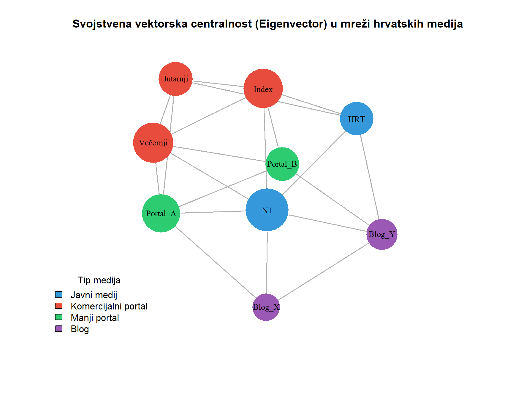
PageRank, algoritam koji je Google koristio za rangiranje web stranica, predstavlja varijantu svojstvene vektorske centralnosti prilagođenu usmjerenim mrežama. Osnovna intuicija je ista: stranica je važna ako na nju upućuju važne stranice. PageRank uključuje dodatne modifikacije poput faktora prigušenja koji rješava probleme s čvorovima bez izlaznih veza. U kontekstu istraživanja medija, PageRank se može primijeniti na mreže hiperlinkova kako bi se identificirali najutjecajniji online izvori.
| Medij | Tip | Svojstvena vekt. centralnost |
|---|---|---|
| N1 | Javni medij | 1.0000 |
| Večernji | Komercijalni portal | 0.9191 |
| Index | Komercijalni portal | 0.8939 |
| Portal_A | Manji portal | 0.8570 |
| Jutarnji | Komercijalni portal | 0.7385 |
| Portal_B | Manji portal | 0.7244 |
| HRT | Javni medij | 0.7163 |
| Blog_Y | Blog | 0.6517 |
| Blog_X | Blog | 0.5471 |
U istraživanjima masovne komunikacije, svojstvena vektorska centralnost je korisna za identificiranje aktera čiji utjecaj proizlazi iz veza s drugim utjecajnim akterima. Novinar koji ima pristup elitnim izvorima, komentator kojeg citiraju drugi utjecajni komentatori, ili portal kojeg dijele mainstream mediji, svi oni mogu imati visoku svojstvenu vektorsku centralnost čak i ako njihov ukupni broj veza nije među najvećima. Ova mjera posebno je relevantna za razumijevanje elite mrežne strukture i identifikaciju aktera koji su utjecajni ne zbog svoje vidljivosti, već zbog kvalitete svojih veza.
3.5 Usporedba mjera centralnosti
Različite mjere centralnosti hvataju različite aspekte važnosti čvora u mreži i mogu proizvoditi značajno različite rangove istih čvorova. Razumijevanje ovih razlika ključno je za odabir odgovarajuće mjere s obzirom na istraživačko pitanje.
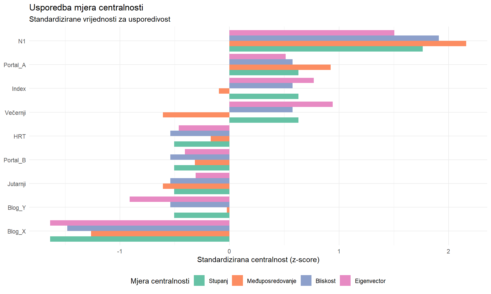
| Medij | Tip | Stupanj | Međuposr. | Bliskost | Eigenvector |
|---|---|---|---|---|---|
| N1 | Javni medij | 6 | 0.152 | 0.800 | 1.000 |
| Index | Komercijalni portal | 5 | 0.060 | 0.727 | 0.894 |
| Večernji | Komercijalni portal | 5 | 0.039 | 0.727 | 0.919 |
| Portal_A | Manji portal | 5 | 0.101 | 0.727 | 0.857 |
| HRT | Javni medij | 4 | 0.057 | 0.667 | 0.716 |
| Jutarnji | Komercijalni portal | 4 | 0.039 | 0.667 | 0.739 |
| Portal_B | Manji portal | 4 | 0.051 | 0.667 | 0.724 |
| Blog_Y | Blog | 4 | 0.062 | 0.667 | 0.652 |
| Blog_X | Blog | 3 | 0.012 | 0.615 | 0.547 |
Tablica 7 sažima interpretacije različitih mjera centralnosti u kontekstu istraživanja masovne komunikacije.
| Mjera | Pitanje koje odgovara | Primjer visokog rezultata | Komunikacijski koncept |
|---|---|---|---|
| Stupanj | Koliko je akter vidljiv/popularan? | Mainstream medij s mnogo pratitelja | Doseg, vidljivost, popularnost |
| Međuposredovanje | Kontrolira li akter protok informacija? | Agregator koji povezuje različite izvore | Gatekeeping, kontrola informacija |
| Bliskost | Koliko učinkovito akter može širiti poruke? | Centralno pozicionirani portal | Učinkovitost difuzije |
| Eigenvector/PageRank | Je li akter povezan s drugim važnim akterima? | Novinar s pristupom elitnim izvorima | Elitni utjecaj, prestiž |
Izbor mjere centralnosti treba biti vođen teorijskim pitanjem koje istraživač postavlja. Ako nas zanima tko je najpopularniji ili najvidljiviji akter, stupanj centralnosti je prirodan izbor. Ako nas zanima tko kontrolira tokove informacija između različitih skupina, međuposredovanje je prikladnije. Ako istražujemo potencijal za brzo širenje poruka, bliskost je relevantna mjera. Ako nas zanima pristup elitnim krugovima ili utjecaj koji proizlazi iz kvalitete veza, svojstvena vektorska centralnost ili PageRank pružaju odgovarajuće uvide. U praksi, sveobuhvatna analiza često uključuje izračun više mjera centralnosti i usporedbu dobivenih rezultata, što omogućuje bogatiju interpretaciju mrežne strukture i uloga pojedinih aktera.
4 Struktura mreže na makro razini
Dosadašnja razmatranja fokusirala su se na pojedinačne čvorove i njihovu relativnu važnost unutar mrežne strukture. Međutim, mreže posjeduju i globalna svojstva koja karakteriziraju strukturu kao cjelinu i koja se ne mogu svesti na karakteristike pojedinih čvorova. Zamislimo istraživača koji uspoređuje mrežu dijeljenja vijesti na Twitteru s mrežom citiranja među akademskim časopisima. Obje mreže mogu imati slične veličine u terminima broja čvorova i veza, no njihove globalne strukture mogu se dramatično razlikovati. Jedna može biti gusta i kohezivna, druga rijetka i fragmentirana. Jedna može pokazivati jasnu hijerarhiju s dominantnim čvorištima, druga može biti egalitarnija. Razumijevanje ovih makro karakteristika pruža uvide u temeljnu organizaciju komunikacijskog sustava i ima implikacije za procese poput širenja informacija, formiranja zajednica i otpornosti mreže na poremećaje.
Analiza strukture mreže na makro razini obuhvaća skup metrika i koncepata koji opisuju globalnu organizaciju mrežne strukture. Ove mjere omogućuju usporedbu različitih mreža, praćenje evolucije iste mreže kroz vrijeme i testiranje hipoteza o procesima koji su generirali promatranu strukturu. U ovom poglavlju razmatramo tri ključna koncepta: gustoću koja mjeri ukupnu povezanost mreže, fenomen malog svijeta koji opisuje istovremenu prisutnost lokalne gustoće i globalnih prečaca, te mreže bez skale koje karakterizira ekstremna nejednakost u distribuciji veza.
4.1 Gustoća mreže
Gustoća (engl. density) predstavlja najjednostavniju globalnu mjeru mrežne strukture koja kvantificira udio realiziranih veza u odnosu na maksimalan mogući broj veza. Intuitivno, gustoća odgovara na pitanje koliko je mreža ispunjena vezama. U potpuno povezanoj mreži gdje svaki čvor ima vezu sa svakim drugim čvorom gustoća iznosi 1, dok u mreži bez ikakvih veza gustoća iznosi 0. Stvarne društvene mreže tipično imaju gustoću negdje između ovih ekstrema, a njezina konkretna vrijednost pruža uvid u kohezivnost i integriranost promatrane zajednice.
Formalno, gustoća neusmjerene mreže definira se kao omjer broja postojećih veza i maksimalnog mogućeg broja veza:
\[D = \frac{2m}{n(n-1)}\]
U ovoj formuli \(m\) označava broj veza u mreži, a \(n\) broj čvorova. Faktor 2 u brojniku proizlazi iz činjenice da je maksimalan broj veza u neusmjerenoj mreži jednak \(\frac{n(n-1)}{2}\) jer svaki par čvorova može biti povezan najviše jednom vezom. Za usmjerene mreže formula se modificira jer svaki par čvorova može imati dvije veze (u oba smjera):
\[D_{usmjerena} = \frac{m}{n(n-1)}\]

U kontekstu istraživanja masovne komunikacije, gustoća mreže može se interpretirati na nekoliko načina ovisno o tipu mreže koja se analizira. U mreži suradnje među novinarima, visoka gustoća sugerira kohezivnu profesionalnu zajednicu gdje većina novinara surađuje s većinom drugih novinara. Niska gustoća može indicirati fragmentiranu profesiju s izoliranim skupinama koje rijetko komuniciraju. U mreži dijeljenja sadržaja na društvenim mrežama, gustoća reflektira intenzitet interakcije među korisnicima. Visoka gustoća može sugerirati aktivnu i angažiranu zajednicu, dok niska gustoća može indicirati pasivniju publiku.
Važno je napomenuti da gustoća ima tendenciju opadanja s veličinom mreže. U maloj grupi od desetak ljudi relativno je lako održavati veze sa svima, no u mreži od tisuću ljudi to postaje praktički nemoguće. Stoga usporedba gustoća mreža različitih veličina zahtijeva oprez. Mreža od 50 čvorova s gustoćom 0.3 nije nužno manje kohezivna od mreže od 500 čvorova s gustoćom 0.05 jer veća mreža ima strukturna ograničenja koja onemogućuju visoku gustoću.
| Tip mreže | Tipična veličina | Očekivana gustoća | Interpretacija |
|---|---|---|---|
| Redakcija medijske kuće | 10-50 | 0.40 - 0.70 | Visoka kohezija, česta suradnja |
| Mreža novinara u državi | 100-500 | 0.05 - 0.15 | Umjerena povezanost profesije |
| Pratitelji na Twitteru (uzorak) | 1.000-10.000 | 0.001 - 0.01 | Vrlo rijetka, selektivno praćenje |
| Mreža citiranja među portalima | 50-200 | 0.10 - 0.30 | Umjerena, selektivno citiranje |
| Globalna mreža hiperlinkova | > 1.000.000 | < 0.0001 | Ekstremno rijetka, fragmentirana |
Osim ukupne gustoće, često je informativno računati lokalnu gustoću za pojedine dijelove mreže. Usporedba gustoće unutar identificiranih zajednica s ukupnom gustoćom mreže može otkriti stupanj modularnosti strukture. Ako su lokalne gustoće unutar zajednica značajno više od globalne gustoće, to sugerira jasno razdvojene i interno kohezivne skupine. Takva struktura tipična je za polarizirane online prostore gdje ideološki slične grupe intenzivno komuniciraju međusobno, ali rijetko s drugima.
4.2 Fenomen malog svijeta
Jedno od najfascinantnijih otkrića mrežne znanosti jest da mnoge stvarne mreže pokazuju fenomen malog svijeta (engl. small world phenomenon). Ovo svojstvo, popularno poznato kao šest stupnjeva odvojenosti, označava da su čvorovi u mreži međusobno povezani iznenađujuće kratkim putanjama usprkos velikoj veličini mreže i relativno niskoj gustoći. Milgramov eksperiment iz 1967. godine empirijski je demonstrirao ovaj fenomen pokazavši da nasumično odabrani Amerikanci mogu biti povezani lancem od svega pet do šest poznanstava. Ovo otkriće izazvalo je duboko čuđenje jer intuitivno očekujemo da bi povezivanje dvaju stranaca u populaciji od stotina milijuna zahtijevalo mnogo duži lanac.
Matematička analiza ovog fenomena pokazuje da mreže malog svijeta karakteriziraju dva naizgled proturječna svojstva. S jedne strane, pokazuju visok koeficijent klasteriranja (engl. clustering coefficient) koji mjeri tendenciju da prijatelji mojih prijatelja budu i moji prijatelji. Ovo svojstvo odražava lokalnu strukturu zajednica i klika. S druge strane, pokazuju kratku prosječnu duljinu putanje (engl. average path length) koja mjeri prosječan broj koraka potrebnih za povezivanje bilo koja dva čvora. Ovo svojstvo odražava postojanje prečaca koji povezuju udaljene dijelove mreže.
Koeficijent klasteriranja za pojedini čvor \(i\) definira se kao udio realiziranih veza među susjedima tog čvora u odnosu na maksimalan mogući broj veza:
\[C_i = \frac{2e_i}{k_i(k_i-1)}\]
U ovoj formuli \(e_i\) označava broj veza među susjedima čvora \(i\), a \(k_i\) je stupanj čvora (broj susjeda). Globalni koeficijent klasteriranja dobiva se kao prosjek lokalnih koeficijenata preko svih čvorova. Visok koeficijent klasteriranja indicira da mreža sadrži mnogo zatvorenih trokuta, odnosno da postoji snažna tendencija formiranja gusto povezanih lokalnih zajednica.
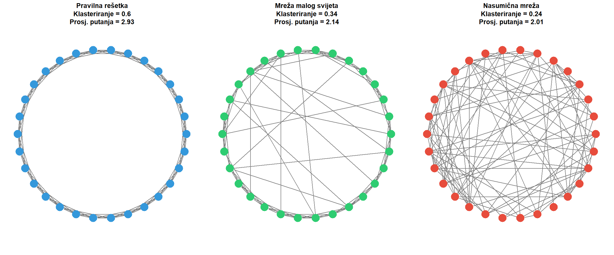
Duncan Watts i Steven Strogatz 1998. godine predložili su elegantan model koji objašnjava kako mreže malog svijeta nastaju. Počevši od pravilne rešetke gdje je svaki čvor povezan samo s najbližim susjedima, nasumično preusmjeravamo mali udio veza prema udaljenim čvorovima. Ovi preusmjereni bridovi djeluju kao prečaci koji dramatično skraćuju prosječnu udaljenost u mreži, dok istovremeno zadržavaju visoko klasteriranje jer većina lokalnih veza ostaje netaknuta. Ključan uvid jest da je potreban samo mali broj prečaca da bi se prosječna putanja drastično skratila.
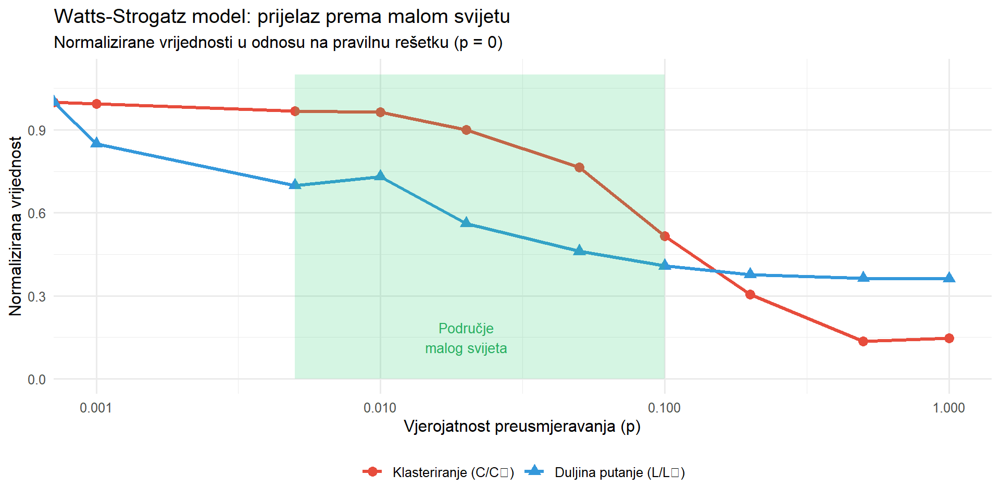
U kontekstu istraživanja masovne komunikacije, fenomen malog svijeta ima značajne implikacije za razumijevanje širenja informacija. Visoko klasteriranje znači da se informacije učinkovito šire unutar lokalnih zajednica jer su članovi gusto povezani. Istovremeno, kratke globalne putanje omogućuju da informacija preskoči iz jedne zajednice u drugu putem malobrojnih prečaca. Ova kombinacija objašnjava zašto vijesti mogu brzo postati viralne, šireći se najprije unutar uskih krugova, a potom eksplodirajući na globalnu razinu kada dosegnu ključne mostove između zajednica.
| Tip mreže | Klasteriranje | Prosječna putanja | Primjer | Implikacije za komunikaciju |
|---|---|---|---|---|
| Pravilna rešetka | Visoko | Duga | Geografski ograničene zajednice | Spora difuzija, lokalna kohezija |
| Mreža malog svijeta | Visoko | Kratka | Većina stvarnih društvenih mreža | Brza difuzija uz lokalnu koheziju |
| Nasumična mreža | Nisko | Kratka | Teoretski konstrukt | Brza difuzija bez lokalne strukture |
Empirijska istraživanja pokazala su da mnoge komunikacijske mreže doista pokazuju svojstva malog svijeta. Mreža pratitelja na Twitteru, mreža prijatelja na Facebooku, mreža citiranja akademskih radova i mreža hiperlinkova na webu sve pokazuju kombinaciju visokog klasteriranja i kratkih prosječnih putanja. Ovo svojstvo čini te sustave iznimno učinkovitima za širenje informacija, ali i ranjivima na brzo širenje dezinformacija koje mogu doseći milijune korisnika u rekordno kratkom vremenu.
4.3 Mreže bez skale
Dok fenomen malog svijeta opisuje globalna svojstva putanja i klasteriranja, mreže bez skale (engl. scale-free networks) odnose se na specifičnu distribuciju povezanosti čvorova. U mreži bez skale, distribucija stupnjeva slijedi zakon potencije (engl. power law):
\[P(k) \propto k^{-\gamma}\]
U ovoj formuli \(P(k)\) označava vjerojatnost da nasumično odabrani čvor ima stupanj \(k\), a \(\gamma\) je eksponent zakona potencije koji tipično poprima vrijednosti između 2 i 3 za stvarne mreže. Ključna karakteristika ove distribucije jest da nema karakterističnu skalu, odnosno tipičnu vrijednost oko koje bi se stupnjevi koncentrirali. Umjesto toga, postoji kontinuum od čvorova s vrlo malo veza do rijetkih čvorova s enormno mnogo veza.
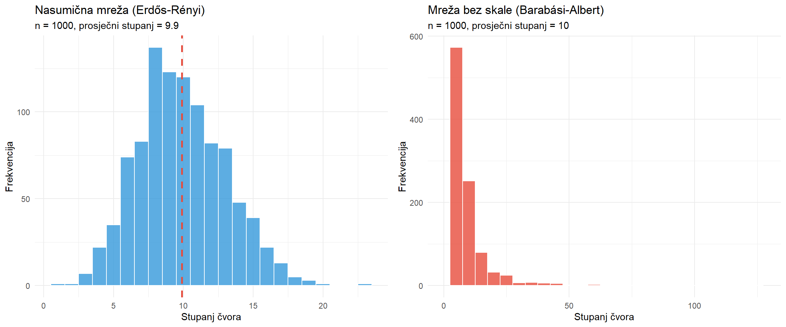
Vizualno, razlika između nasumične mreže i mreže bez skale postaje očita kada promotrimo distribuciju stupnjeva. U nasumičnoj mreži većina čvorova ima približno jednak broj veza koji se grupira oko prosječne vrijednosti, tvoreći zvonoliku distribuciju. U mreži bez skale, većina čvorova ima vrlo malo veza dok mali broj čvorova, nazvanih čvorištima ili hubovima, ima enormno mnogo veza. Ova ekstremna nejednakost ključna je karakteristika mreža bez skale.
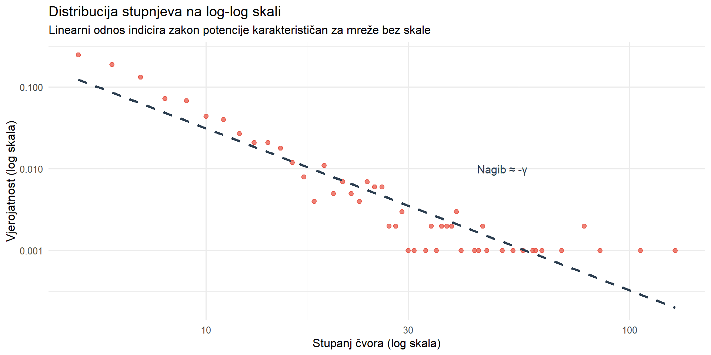
Barabási i Albert 1999. godine predložili su mehanizam koji objašnjava kako mreže bez skale nastaju. Njihov model temelji se na dva ključna procesa: rast i preferencijsko prikapčanje. Mreža raste dodavanjem novih čvorova koji se povezuju s postojećim čvorovima. Ključna karakteristika jest da novi čvorovi ne biraju susjede nasumično već preferiraju povezivanje s već dobro povezanim čvorovima. Vjerojatnost da će novi čvor formirati vezu s postojećim čvorom \(i\) proporcionalna je stupnju tog čvora:
\[\Pi(k_i) = \frac{k_i}{\sum_j k_j}\]
Ovaj mehanizam proizvodi dinamiku bogatiji postaju bogatiji gdje čvorovi koji su rano stekli prednost u broju veza nastavljaju privlačiti neproporcionalno više novih veza. Rezultat je ekstremna koncentracija veza u malom broju čvorišta.
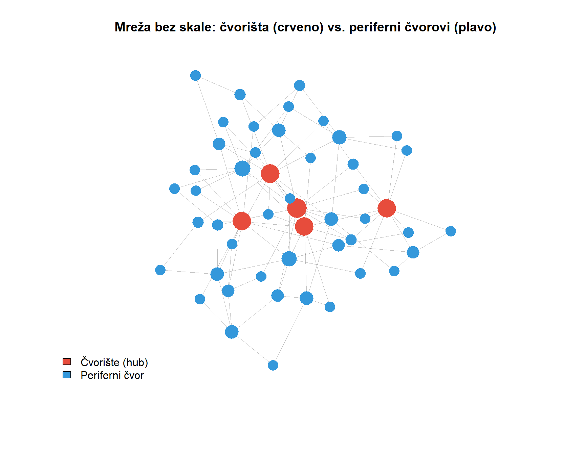
U kontekstu istraživanja masovne komunikacije, mreže bez skale imaju dalekosežne implikacije. Postojanje čvorišta znači da mali broj aktera ima disproporcionalan utjecaj na tokove informacija. U mreži dijeljenja vijesti na društvenim mrežama, nekoliko influencera s milijunima pratitelja može doseći više ljudi nego tisuće običnih korisnika zajedno. U mreži citiranja među medijima, nekoliko autoritativnih izvora dominira kao referentne točke dok većina medija ima marginalnu citiranost.
| Aspekt | Karakteristika | Primjer u medijima |
|---|---|---|
| Širenje informacija | Čvorišta omogućuju brzo globalno širenje | Vijest koju podijeli influencer doseže milijune |
| Otpornost na greške | Nasumično uklanjanje čvorova malo utječe na mrežu | Gašenje malih portala ne utječe na ekosustav |
| Ranjivost na napade | Ciljano uklanjanje čvorišta može fragmentirati mrežu | Suspenzija glavnih računa dramatično utječe na diskurs |
| Koncentracija moći | Mali broj aktera kontrolira većinu tokova | Nekoliko medijskih kuća postavlja agendu |
| Viralnost sadržaja | Sadržaj koji dođe do čvorišta eksplodira | Meme ili video postaje viralan preko ključnih računa |
Posebno zanimljiva karakteristika mreža bez skale jest njihova asimetrična otpornost. Ove mreže pokazuju izvanrednu otpornost na nasumične poremećaje jer uklanjanje nasumičnih čvorova uglavnom pogađa periferne čvorove s malo veza, što minimalno utječe na globalnu povezanost. Međutim, iste mreže izrazito su ranjive na ciljane napade usmjerene protiv čvorišta. Uklanjanje samo nekoliko najvažnijih čvorišta može fragmentirati mrežu u nepovezane komponente. Ova dualnost ima praktične implikacije za razumijevanje otpornosti komunikacijskih sustava i strategija za suzbijanje dezinformacija ili koordiniranih kampanja.
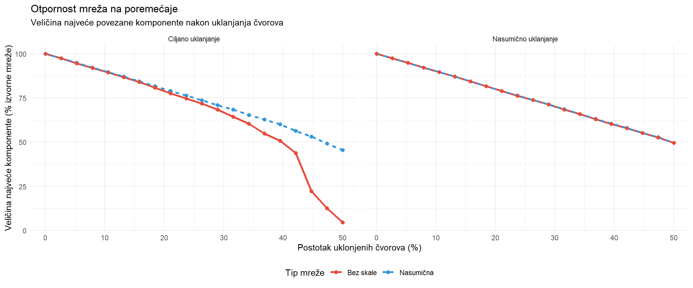
Empirijska istraživanja pokazala su da mnoge komunikacijske mreže doista pokazuju karakteristike mreža bez skale. Distribucija pratitelja na Twitteru, distribucija citiranosti znanstvenih radova, distribucija posjećenosti web stranica i distribucija dijeljenja vijesti sve pokazuju približno distribuciju zakona potencije. Ova univerzalnost sugerira da slični generativni procesi, poput preferencijskog prikapčanja, operiraju u raznolikim komunikacijskim sustavima. Razumijevanje ove strukture ključno je za dizajniranje intervencija, bilo da je cilj maksimizirati doseg poruke identificiranjem ključnih čvorišta ili minimizirati širenje dezinformacija prepoznavanjem i neutraliziranjem ključnih širitelja.
| Mjera | Definicija | Tipične vrijednosti | Interpretacija |
|---|---|---|---|
| Gustoća | Udio realiziranih veza od mogućih | 0.001 - 0.3 ovisno o veličini | Kohezivnost i integriranost zajednice |
| Koeficijent klasteriranja | Vjerojatnost da su susjedi čvora međusobno povezani | 0.1 - 0.5 za društvene mreže | Lokalna struktura zajednica i klika |
| Prosječna duljina putanje | Prosječan broj koraka između bilo koja dva čvora | 3 - 8 za većinu stvarnih mreža | Učinkovitost globalne komunikacije |
| Eksponent zakona potencije (γ) | Nagib distribucije stupnjeva na log-log skali | 2 - 3 za mreže bez skale | Stupanj nejednakosti u distribuciji veza |
Razumijevanje makro strukture mreže pruža temelj za sofisticiraniju analizu komunikacijskih fenomena. Gustoća nam govori o kohezivnosti sustava, fenomen malog svijeta objašnjava kako se informacije mogu brzo širiti usprkos velikoj veličini mreže, a distribucija zakona potencije otkriva ekstremnu koncentraciju utjecaja u malom broju čvorišta. Ova tri koncepta zajedno pružaju bogat okvir za razumijevanje arhitekture suvremenih komunikacijskih ekosustava i procesa koji se unutar njih odvijaju.
5 Grupe, klasteri i zajednice
Zamislimo istraživača koji analizira mrežu interakcija na hrvatskom političkom Twitteru tijekom predizborne kampanje. Vizualizirajući mrežu, primjećuje da se korisnici ne raspoređuju nasumično već formiraju jasno odvojene skupine. Korisnici unutar svake skupine intenzivno komuniciraju međusobno, dijele slične sadržaje i retweetaju jedni druge, dok su interakcije između skupina znatno rjeđe. Daljnjom analizom otkriva da ove skupine odgovaraju političkim preferencijama: birači jedne stranke grupiraju se zajedno, odvojeni od birača konkurentskih stranaka. Ova opservacija otvara fundamentalna pitanja o strukturi komunikacijskih mreža: zašto se formiraju grupe, kako ih možemo identificirati i kvantificirati, te koje su posljedice takve fragmentacije za javni diskurs?
Analiza grupa, klastera i zajednica unutar mreža predstavlja jedno od najaktivnijih područja mrežne znanosti s dalekosežnim implikacijama za razumijevanje društvenih fenomena. Ljudi imaju prirodnu tendenciju formiranja skupina s onima koji su im slični, bilo po demografskim karakteristikama, interesima, uvjerenjima ili geografskoj blizini. Ova tendencija, poznata kao homofilija, rezultira mrežnim strukturama koje su daleko od nasumičnih. Razumijevanje ovih struktura omogućuje uvide u procese poput formiranja javnog mnijenja, širenja informacija unutar i između zajednica, polarizacije diskursa i fragmentacije javne sfere. U ovom poglavlju razmatramo ključne koncepte i metode za analizu grupne strukture mreža, počevši od najjednostavnijih potpuno povezanih podgrupa (klika), preko fenomena homofilije, do sofisticiranih algoritama za detekciju zajednica i teorije strukturnih rupa.
5.1 Klike
Klika (engl. clique) predstavlja najjednostavniji i najstroži oblik grupne strukture u mreži. Formalno, klika je potpuni podgraf, odnosno skup čvorova u kojem je svaki čvor izravno povezan sa svakim drugim čvorom u tom skupu. U kliki od tri čvora postoje tri veze, u klici od četiri čvora postoji šest veza, a općenito u klici od \(k\) čvorova postoji \(\frac{k(k-1)}{2}\) veza. Intuitivno, klika predstavlja savršeno kohezivnu grupu gdje svi članovi poznaju sve ostale članove.
U kontekstu društvenih mreža, klike možemo zamisliti kao uske krugove prijatelja gdje je svaka osoba prijatelj sa svakom drugom osobom u grupi. U kontekstu istraživanja masovne komunikacije, klika bi mogla predstavljati grupu novinara koji svi međusobno surađuju, grupu portala koji svi međusobno citiraju ili grupu korisnika društvenih mreža koji svi međusobno prate i dijele sadržaje jedni drugih.
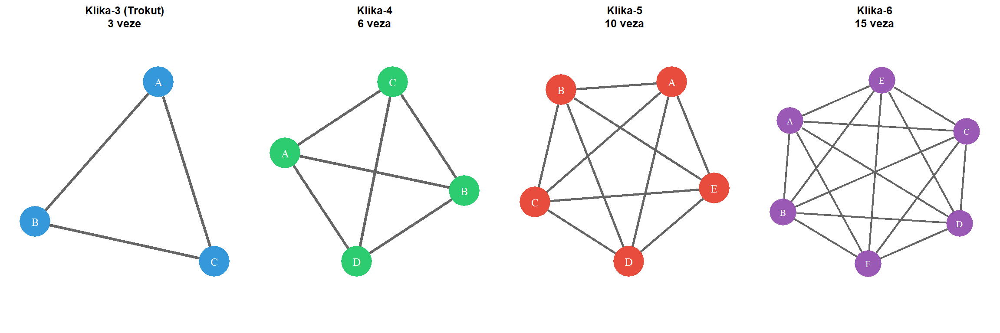
Identificiranje klika u mreži omogućuje otkrivanje najkohezivnijih podskupina. Međutim, strogi zahtjev da svaki član mora biti povezan sa svakim drugim članom čini velike klike izuzetno rijetkim u stvarnim mrežama. U velikoj društvenoj mreži od tisuću čvorova možemo pronaći stotine trokuta (klika-3), desetke klika-4, možda nekoliko klika-5, a klike većih veličina vjerojatno neće postojati. Ova rijetkoća proizlazi iz kombinatoričkih ograničenja jer broj potrebnih veza eksponencijalno raste s veličinom klike.
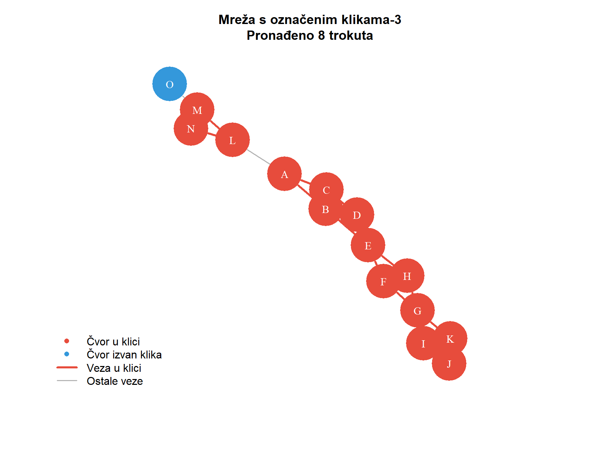
Budući da su klike često prerestriktivan koncept, istraživači koriste relaksirane verzije poput n-klana (čvorovi udaljeni najviše n koraka), k-plexa (dopušta da svakom čvoru nedostaje do k veza) ili k-jezgre (svaki čvor ima najmanje k veza unutar podgrupa). Ove relaksirane definicije omogućuju identificiranje kohezivnih grupa koje nisu savršeno povezane, ali ipak pokazuju visoku razinu unutarnje gustoće.
| Koncept | Definicija | Strogost | Tipična primjena |
|---|---|---|---|
| Klika | Svaki čvor povezan sa svakim drugim | Najviša | Identifikacija najužih krugova |
| K-jezgra | Svaki čvor ima najmanje k veza unutar grupe | Srednja | Pronalaženje kohezivnih jezgri |
| N-klan | Svi čvorovi udaljeni najviše n koraka | Niža | Grupe s neizravnim vezama |
| K-pleks | Svakom čvoru nedostaje najviše k veza do potpunosti | Niža | Gotovo potpune grupe |
5.2 Homofilija
Homofilija (engl. homophily), doslovno ljubav prema sličnima, označava temeljnu tendenciju u društvenim mrežama da se veze formiraju češće između sličnih nego između različitih aktera. Ova tendencija sažeta je u poslovici ptice istog perja zajedno lete (engl. birds of a feather flock together). Homofilija može operirati po različitim dimenzijama sličnosti uključujući demografske karakteristike poput dobi, spola, etničke pripadnosti ili obrazovanja, geografsku blizinu, profesionalnu pripadnost, političke stavove ili kulturne preferencije.
U kontekstu istraživanja masovne komunikacije, homofilija ima dalekosežne implikacije. Ako se korisnici društvenih mreža pretežno povezuju s ideološki sličnim korisnicima, rezultat je fragmentirana mreža s izoliranim odječnim komorama (engl. echo chambers) unutar kojih cirkuliraju slične informacije i perspektive. Ova struktura može pojačavati polarizaciju jer članovi svake komore rijetko dolaze u doticaj s alternativnim pogledima.
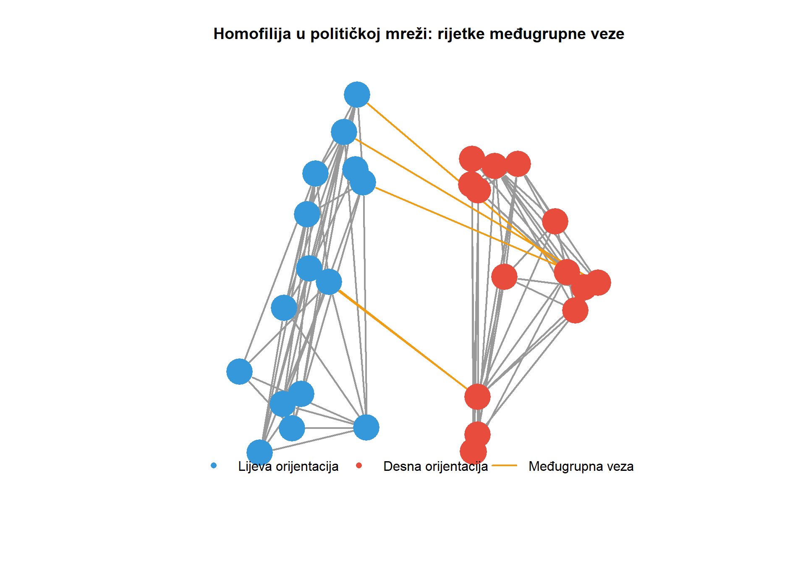
Kvantificiranje homofilije zahtijeva usporedbu promatrane frekvencije veza između sličnih čvorova s očekivanom frekvencijom pod pretpostavkom nasumičnog formiranja veza. Indeks homofilije (ili asortativnost po atributu) mjeri stupanj u kojem čvorovi istog tipa imaju tendenciju povezivanja:
\[H = \frac{e_{ii} - a_i^2}{1 - a_i^2}\]
U ovoj formuli \(e_{ii}\) predstavlja udio veza koje povezuju čvorove istog tipa \(i\), a \(a_i\) je udio čvorova tipa \(i\) u mreži. Vrijednost 0 indicira nasumično miješanje, pozitivne vrijednosti indiciraju homofiliju, a negativne vrijednosti indiciraju heterofiliju (tendenciju povezivanja s različitima).
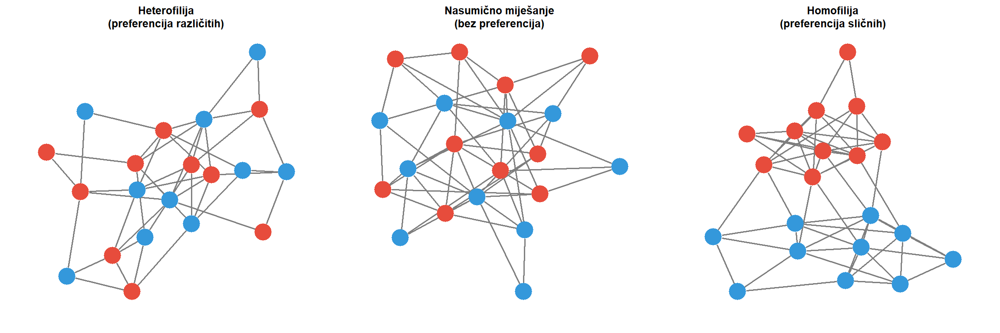
U istraživanjima masovne komunikacije, homofilija se manifestira na više razina. Na razini pojedinaca, korisnici društvenih mreža tendiraju pratiti i dijeliti sadržaje od korisnika sličnih političkih uvjerenja. Na razini medija, portali slične ideološke orijentacije češće citiraju jedni druge nego portale suprotne orijentacije. Na razini tema, rasprave o kontroverznim pitanjima često se fragmentiraju u odvojene struje koje rijetko komuniciraju. Razumijevanje homofilije ključno je za analizu fenomena poput polarizacije, odječnih komora i selektivne izloženosti informacijama.
| Dimenzija | Manifestacija | Posljedice | Primjer |
|---|---|---|---|
| Politička ideologija | Praćenje ideološki bliskih izvora | Odječne komore, polarizacija | Ljevičari prate ljevičarske portale |
| Profesionalna pripadnost | Citiranje unutar struke | Disciplinarna izolacija | Novinari citiraju novinare |
| Geografska lokacija | Dijeljenje lokalnih vijesti | Lokalizacija javne sfere | Splićani dijele splitske vijesti |
| Generacija/dob | Platformske preferencije po dobi | Generacijski jaz u informiranosti | Mladi na TikToku, stariji na FB |
| Jezična grupa | Konzumacija medija na materinjem jeziku | Fragmentacija nacionalne javnosti | Manjine prate medije na svom jeziku |
5.3 Modularnost i detekcija zajednica
Dok klike zahtijevaju savršenu povezanost, a homofilija opisuje tendencije formiranja veza, detekcija zajednica (engl. community detection) predstavlja opći problem identificiranja grupa čvorova koje su interno gusto povezane, a međusobno rijetko povezane. Ovaj problem nema jedinstveno rješenje jer sama definicija zajednice nije strogo određena. Različiti algoritmi operacionaliziraju koncept zajednice na različite načine, proizvodećE različite podjele iste mreže.
Modularnost (engl. modularity) jest mjera kvalitete podjele mreže na zajednice koja uspoređuje promatranu gustoću veza unutar zajednica s očekivanom gustoćom pod pretpostavkom nasumičnog formiranja veza. Formalno, modularnost se definira kao:
\[Q = \frac{1}{2m} \sum_{ij} \left[ A_{ij} - \frac{k_i k_j}{2m} \right] \delta(c_i, c_j)\]
U ovoj formuli \(A_{ij}\) je element matrice susjedstva, \(k_i\) i \(k_j\) su stupnjevi čvorova \(i\) i \(j\), \(m\) je ukupan broj veza, a \(\delta(c_i, c_j)\) je Kroneckerova delta koja iznosi 1 ako čvorovi \(i\) i \(j\) pripadaju istoj zajednici, inače 0. Visoka modularnost (tipično iznad 0.3) indicira jasnu podjelu na zajednice.
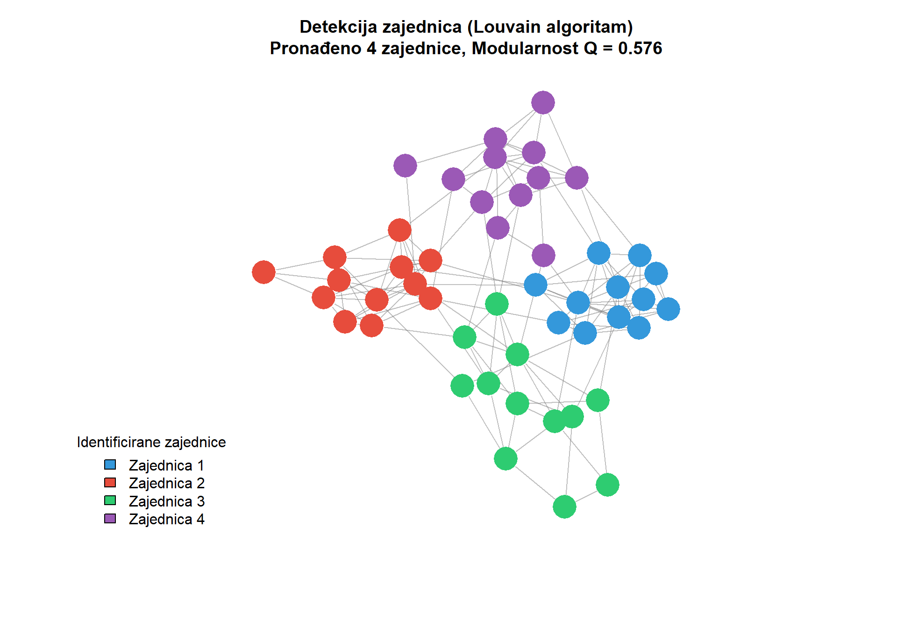
Louvain algoritam predstavlja jedan od najpopularnijih pristupa detekciji zajednica zbog svoje učinkovitosti i kvalitete rezultata. Algoritam radi u dvije faze koje se iterativno ponavljaju. U prvoj fazi, svaki čvor započinje kao zasebna zajednica, a zatim se iterativno premješta u zajednicu susjeda koja maksimalno povećava modularnost. U drugoj fazi, identificirane zajednice agregiraju se u super-čvorove, formirajući novu, manju mrežu na kojoj se postupak ponavlja. Algoritam konvergira kada više nije moguće povećati modularnost premještanjem čvorova.
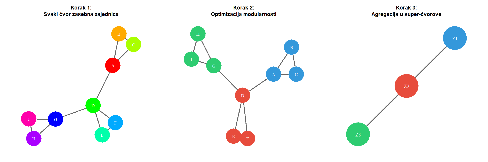
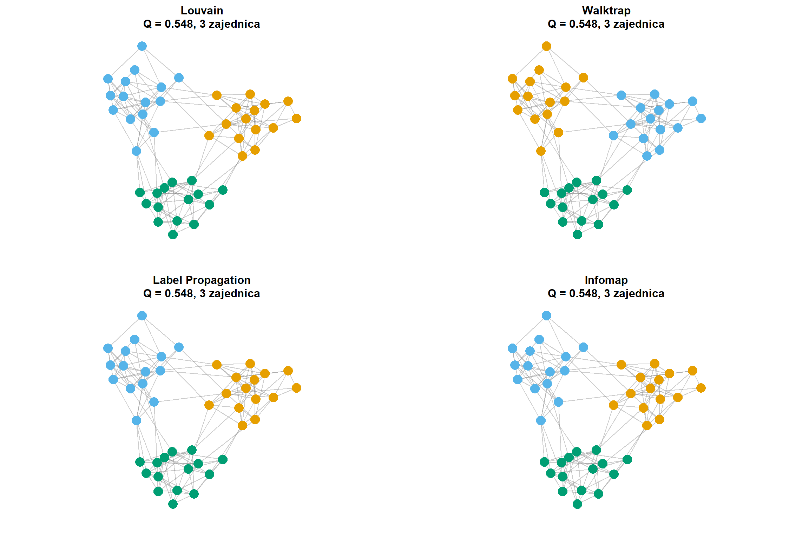
| Algoritam | Princip rada | Prednosti | Nedostaci |
|---|---|---|---|
| Louvain | Pohlepna optimizacija modularnosti | Brz, skalabilan, dobri rezultati | Može propustiti male zajednice |
| Walktrap | Nasumične šetnje unutar zajednica | Teoretski utemeljen, hijerarhijski | Sporiji za velike mreže |
| Label Propagation | Propagacija oznaka među susjedima | Vrlo brz, jednostavan | Nedeterministički rezultati |
| Infomap | Minimizacija duljine opisa toka | Hvata tokove informacija | Osjetljiv na parametre |
| Girvan-Newman | Iterativno uklanjanje mostova | Otkriva hijerarhijsku strukturu | Računalno zahtjevan |
U kontekstu istraživanja masovne komunikacije, detekcija zajednica omogućuje mapiranje strukture javne sfere. Analizom mreže dijeljenja vijesti na društvenim mrežama možemo identificirati ideološke skupine, tematske zajednice ili regionalne klastere. Analizom mreže citiranja među medijima možemo otkriti medijske ekosustave i razumjeti kako se grupiraju izvori informacija. Ova saznanja imaju praktične implikacije za razumijevanje fragmentacije javnosti, ciljanje komunikacijskih kampanja i dizajn intervencija protiv dezinformacija.
5.4 Strukturne rupe
Dok se dosadašnja rasprava fokusirala na kohezivne grupe i njihovu unutarnju strukturu, teorija strukturnih rupa (engl. structural holes), koju je razvio sociolog Ronald Burt, usmjerava pažnju na praznine između grupa i aktere koji ih premošćuju. Strukturna rupa jest odsutnost veze između dvaju čvorova ili klastera koji bi inače bili nepovezani. Akter koji premošćuje strukturnu rupu, povezujući inače nepovezane dijelove mreže, zauzima strateški privilegiranu poziciju koja mu pruža pristup raznolikim informacijama i mogućnost posredovanja između različitih grupa.
Burtova teorija temelji se na ideji da redundantne veze, odnosno veze s čvorovima koji su i sami međusobno povezani, pružaju manje koristi od veza koje premošćuju strukturne rupe. Ako su svi moji prijatelji ujedno i prijatelji jedni s drugima, informacije koje dobijem od bilo kojeg od njih vjerojatno će biti slične jer cirkuliraju unutar iste zatvorene grupe. Nasuprot tome, ako imam prijatelje u različitim, nepovezanim grupama, svaki od njih pruža mi pristup jedinstvenim izvorima informacija.
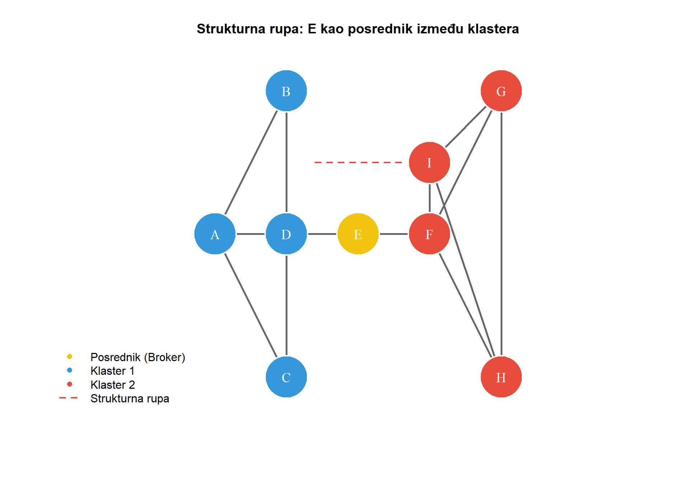
Za kvantificiranje pozicije aktera u odnosu na strukturne rupe, Burt je predložio mjeru ograničenja (engl. constraint) koja mjeri stupanj u kojem su veze aktera redundantne. Nisko ograničenje indicira da akter ima veze prema nepovezanim dijelovima mreže, dok visoko ograničenje indicira da su kontakti aktera međusobno povezani. Formalno, ograničenje čvora \(i\) definira se kao:
\[C_i = \sum_j \left( p_{ij} + \sum_q p_{iq} p_{qj} \right)^2\]
gdje \(p_{ij}\) predstavlja udio veze s čvorom \(j\) u ukupnim vezama čvora \(i\). Čvorovi s niskim ograničenjem zauzimaju pozicije brokera koji premošćuju strukturne rupe.
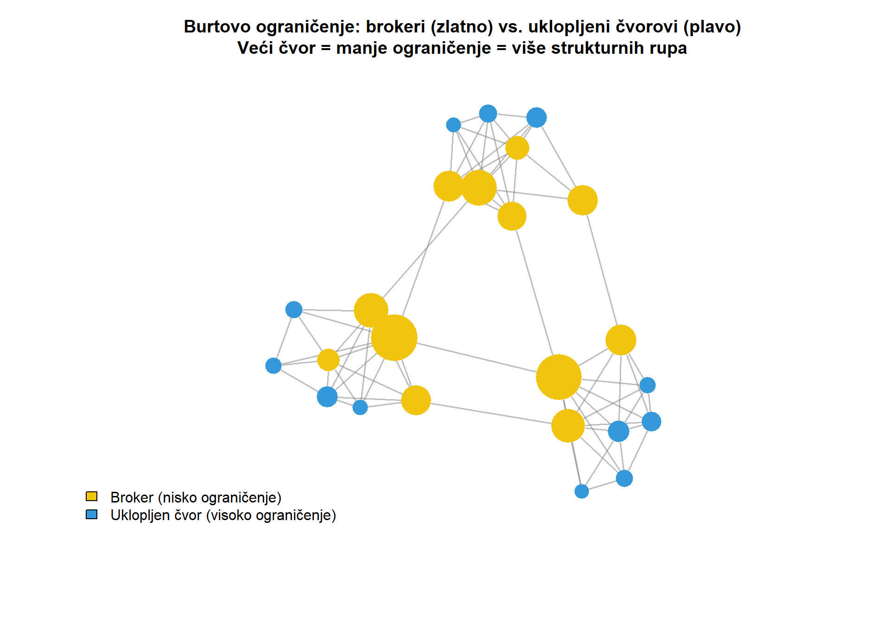
| Karakteristika | Pozicija u mreži | Pristup informacijama | Primjer u medijima | Strateška prednost/nedostatak |
|---|---|---|---|---|
| Nisko ograničenje (broker) | Povezuje nepovezane grupe | Raznolike, neredundantne informacije | Novinar s izvorima u različitim sektorima; agregator koji povezuje mainstream i alternativne medije | Kontrola toka informacija, pristup raznolikim perspektivama, posrednička moć |
| Visoko ograničenje (uklopljen) | Uklopljen u kohezivnu grupu | Redundantne informacije iz iste grupe | Novinar koji surađuje samo s kolegama iz iste redakcije; korisnik unutar odječne komore | Povjerenje i solidarnost unutar grupe, ali ograničen pristup novim informacijama |
U kontekstu istraživanja masovne komunikacije, teorija strukturnih rupa ima značajne implikacije. Novinari ili mediji koji premošćuju strukturne rupe imaju pristup raznolikijim izvorima i mogu posredovati između različitih segmenata javnosti. Influenceri koji povezuju ideološki različite zajednice igraju ključnu ulogu u potencijalnom premošćivanju polarizacije. S druge strane, identificiranje strukturnih rupa može pomoći u razumijevanju zašto određene informacije ne cirkuliraju između grupa i kako bi intervencije mogle poboljšati protok informacija.
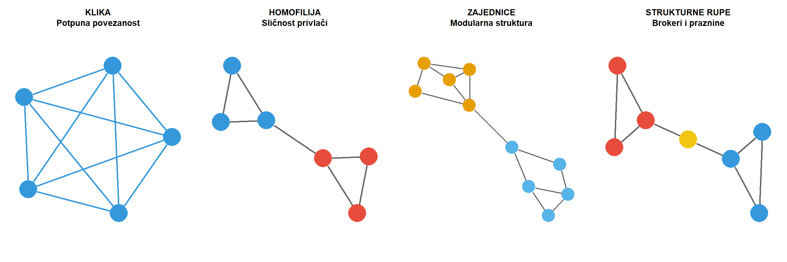
Razumijevanje grupne strukture mreža pruža temelj za sofisticirane analize komunikacijskih fenomena. Identificiranje klika otkriva najuže krugove intenzivne suradnje. Mjerenje homofilije kvantificira tendencije formiranja veza po sličnosti. Detekcija zajednica mapira globalnu strukturu javne sfere. Analiza strukturnih rupa identificira ključne posrednike koji kontroliraju tokove informacija. Zajedno, ovi koncepti čine bogat analitički arsenal za razumijevanje kako su komunikacijske mreže strukturirane i kakve su posljedice te strukture za procese poput širenja informacija, formiranja javnog mnijenja i fragmentacije diskursa.